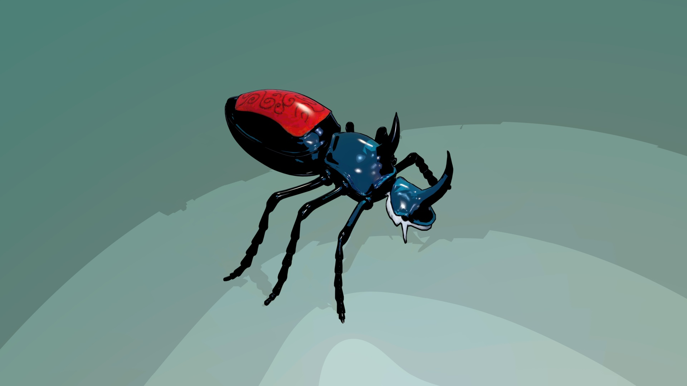
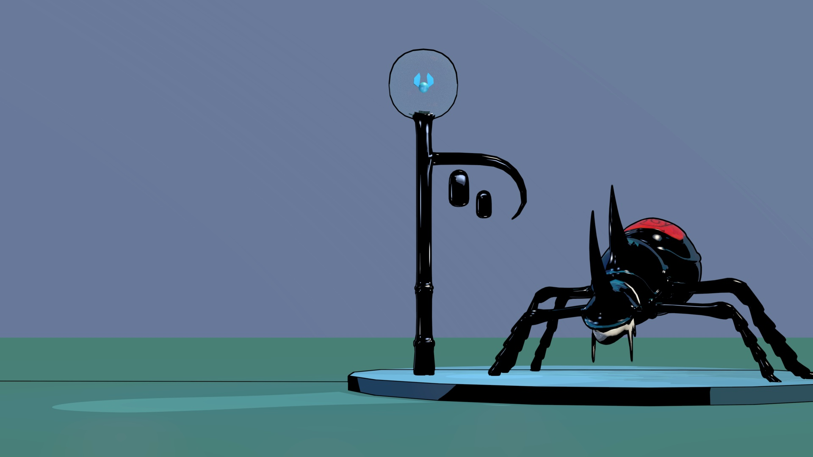
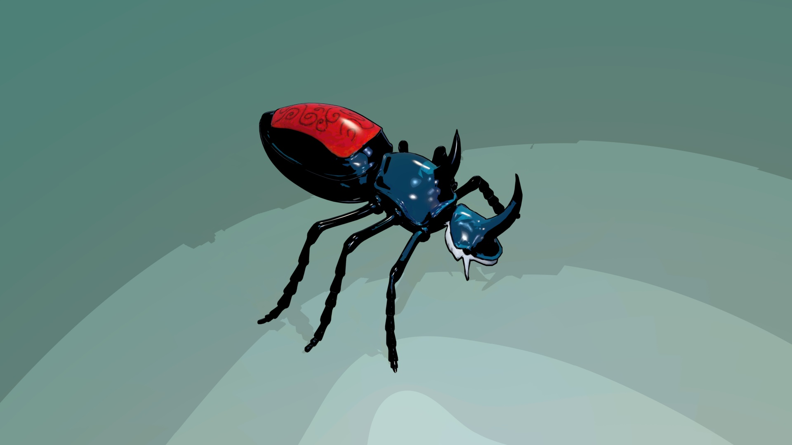
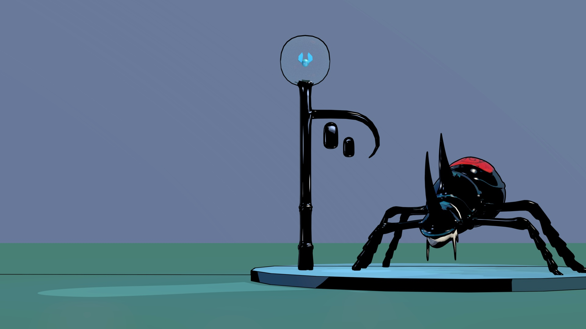

Unity Projects
Sant Mateu al Temps
Unity University C# Krita
Sant Mateu al Temps is a point-and-click style logic and skill puzzle game, inspired by the famous Professor Layton series and set in the Castellón town of Sant Mateu.
- My contributions:
- Designed 2 puzzles out of a total of 12.
- Character design and unification of the art style with the team.
- Design of user interface (UI) elements.
- Puzzle design.
- If you want to see the complete work, I’ve attached the
art book.
Pinguinos de Madagascar
Unity University C#
Stealth Game .
Your objective is to reach the escape plane while evading guards and patrol dogs.
- My contributions:
- Level Design
- Programming of NPC AI focusing on **Sensory and Perception Systems**.
- Implementation of the **State Machine** for controlling NPC behavior.
Atrapado
Unity University C#
Escape Room with procedural room generation.
In this game, you must collect all the keys and find the door to escape, but be careful not to get caught by the dinosaur!
- My contributions:
- Complete design, art, and programming.
other proyects
A Hero's Journey
Krita University Gdevelop
My First Platformer Game
Developed in GDevelop, this project focuses on level design, characters, items, and enemies, aiming to deliver a fun and well-balanced experience. As my first venture into game development, I placed special emphasis on the creative and visual aspects.
- My contributions:
- Complete design, art, and programming.
3D models
 



Organic modeling project: Stag character from the video game Hollow Knight.


Academic project: 3D modeling of a Lego piece.
Contact
Feel free to send me a message here: anaamariap2@gmail.com, I'll try to respond as quick as I can! I'm also on this social media thing, if you need me there: